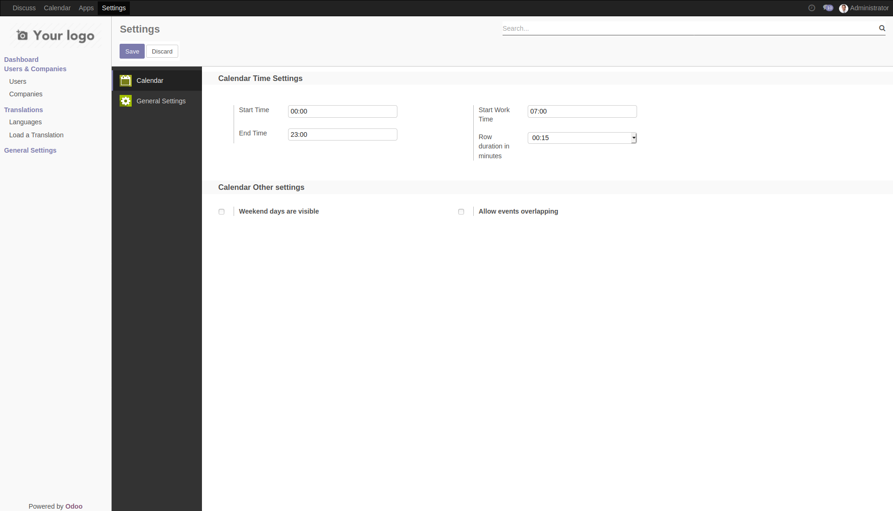

Calendar settings customization
This module allow changing Odoo default calendar settings (based on Javascript library "http://fullcalendar.io/")
In order to change the « Calendar Settings »:
Go to « Settings → General settings → Calendar
- Change interval duration time in minutes between 15 min, 30 min or 1 hour (Row duration in minutes)
- Change starting day hour (Start Time)
- Change ending day hour (End Time)
- Change initial scrolling day hour (Start Work Time)
- Enable\Disable Weekend days (Weekend days are visible)
- Enable\Disable overlapping events (Allow overlapping events)
- Choose first day of the week Sunday, Monday or Tuesday (First day of week)
